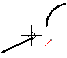
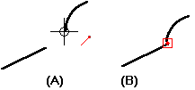

Connect elements
-
Choose Home or Sketching tab→Relate group→Connect .
-
Click an element at a key point.

-
Click another element or key point (A). One element moves to connect the elements (B).

Tip:You can also use the command to create a connect relationship between an element and a series of endpoint connected elements, such that the series acts as a single element. This group can be a combination of lines, arcs, elliptical arcs, and open b-spline curves. The series of elements can be open or closed, but cannot be disjoint. All elements in the series must be endpoint connected.